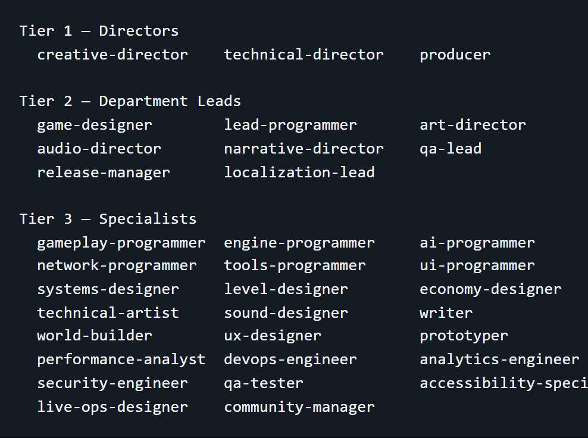
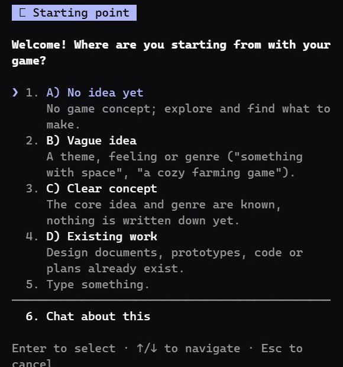

※ 공식 설치 문서(README·에이전트·스킬 파일) 기준이에요. Claude Code Game Studios는 Claude Code 폴더 하나를 게임 회사처럼 바꾸는 무료 틀(MIT)이에요. 내 게임 폴더로 복제해서 쓰면, 감독 3명·팀장 8명·전문가 23명·엔진 전문가 15명, 모두 49명의 AI 직원이 역할을 나눠 일해요. 기본 설정에서는 직원이 먼저 묻고, 선택지를 2~4개 보여 주고, 내가 고른 뒤에야 파일을 써요. 마지막 결정은 언제나 내가 해요.

터미널에서 '복사해서 쓰기'의 복제 명령을 실행해요. my-game 자리는 원하는 폴더 이름으로 바꿔도 돼요. 이 저장소는 '틀'이라, 복제한 폴더가 그대로 내 게임 프로젝트가 돼요.
CLAUDE.md와 project.yaml이 있는 맨 위 폴더에서 claude 를 실행해요. src 같은 하위 폴더에서 열면 자동 검사(훅)·금지 규칙·'먼저 묻기' 설정이 빠져요(README).
/start 는 지금 어디쯤인지 물어봐요 — 아이디어 없음 / 대충 있음 / 기획이 확실함 / 이미 만든 게 있음. 답에 맞춰 다음 한 단계를 알려 주고, 그 단계를 스스로 실행하지는 않아요. 처음엔 얼마나 꼼꼼하게 할지(rigor)도 물어봐요.

/setup-engine (엔진 고르기, 예: /setup-engine godot 4.7) → /brainstorm (한 장짜리 기획서 design/game-brief.md) → /create-stories (기획서를 할 일 카드로 쪼갬, production/epics 아래 story 파일) → /dev-story (카드 하나를 그 종류에 맞는 프로그래머 직원에게 넘김: 화면 UI는 UI 프로그래머, 게임 규칙은 게임플레이 프로그래머, 적 AI·길찾기는 AI 프로그래머, 기초 구조는 엔진 프로그래머) → /story-done (완료 조건을 확인하고 카드를 닫음) → 다음 카드.
기획서는 design/, 할 일 카드는 production/epics/, 게임 코드는 엔진 폴더(고도는 src/), 화면 확인 사진은 production/qa/evidence/에 쌓여요. 화면이 바뀌는 카드는 게임을 실제로 켜서 보고 스크린샷을 남겨야 닫혀요(README). 어디까지 왔는지 모르겠으면 /help 를 치면 다음 할 일을 알려 줘요.
같은 층 직원끼리는 상의만 하고 결정은 못 해요. 부딪치면 위로 올라가요 — 기획 문제는 창작 감독(creative-director), 기술 문제는 기술 감독(technical-director). 예(감독 파일 원문): 기획자는 복잡한 제작 시스템을 넣자 하고, 리드 프로그래머는 3주 걸린다는데 남은 건 2주 → 감독이 선택지 2~3개와 추천을 내고 '결정은 당신 몫'이라고 해요.
기본(collaborative)은 파일 하나 쓰기 전에도 'May I write this to …?'라고 묻고 내가 '예' 해야 써요. 빨리 가고 싶으면 /settings 로 modes.automation 을 guided(큰 결정만 물음)나 autonomous(끝까지 자동, 결정은 기록만)로 바꿀 수 있어요 — 이때는 결재 없이 진행돼요. 꼼꼼함은 /settings modes.rigor=standard 또는 full 로 올려요(기획 문서·검토가 늘어나요).
/team-combat, /team-ui, /team-audio, /team-level 처럼 팀 명령을 쓰면 한 기능(예: 근접 패링)을 기획 → 구현 → 검사까지 여러 직원이 차례로 맡아요. 예: /team-combat melee parry system
쓰기 좋은 때: 혼자 게임을 만드는데 기획·구현·검사를 순서대로 챙기고 싶을 때, 작은 게임잼 게임을 빠르게(minimal) 만들 때, 이미 만든 게임에 정리된 구조를 붙이고 싶을 때(/adopt). 안 맞는 때: 버튼 한 번에 완성 게임이 나오길 바랄 때(묻고 고르는 과정이 있어요), 게임 엔진을 깔 수 없는 환경, 클로드 사용량을 아끼고 싶을 때.
'우주선이 운석을 피하며 버티는 2D 게임' 같은 아이디어가 있다면: ① /start → '대충 있음' 고르기 → ② /setup-engine godot 4.7 → ③ /brainstorm → 직원이 묻는 질문(누가, 무엇을, 이기면/지면)에 답하고 한 장 기획서를 승인 → ④ /create-stories → 카드 목록(예: 우주선 이동, 운석 떨어지기, 점수 화면)을 확인·승인 → ⑤ /dev-story <첫 카드 경로> → 프로그래머 직원이 구조를 먼저 보여 주고 '써도 될까요?'를 물음 → 승인 → ⑥ 게임을 켜서 확인 → /story-done → 다음 카드. 이 흐름은 README의 minimal 경로(/start → /setup-engine → /brainstorm → /create-stories → /dev-story ↔ /story-done)를 그대로 옮긴 거예요.
터미널에서
git clone https://github.com/Donchitos/Claude-Code-Game-Studios.git my-game
복제한 맨 위 폴더에서
cd my-game && claude
Claude Code에서
/start
Claude Code에서
/setup-engine godot 4.7
Claude Code에서
/settings
Claude Code에서
/help
도움이 되셨다면
@ai.antenna.kr
에서 바로 쓰는 AI 활용법을 계속 올립니다.